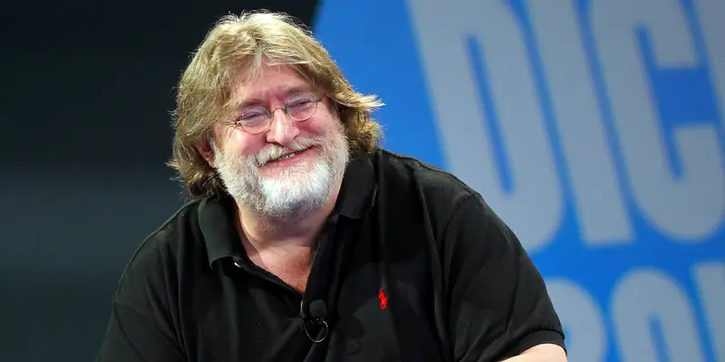

is a digital distribution service and storefront developed by Valve. It was
launched as a software client in September 2003 to provide video game updates
automatically for Valve's games and expanded to distributing third-party titles in late
2005. Steam offers various features, such as game server matchmaking with Valve Anti-Cheat (VAC)
measures, social networking, and game streaming services. The Steam client functions
include update maintenance, cloud storage, and community features such as direct
messaging, an in-game overlay, discussion forums, and a virtual collectable marketplace.
The storefront also offers productivity software, game soundtracks, videos, and sells hardware made by Valve,
such as the Valve Index and the Steam Deck.
Information was

Gabe newell
Gabe Logan Newell (born November 3, 1962), also known by his nickname GabeN, is an American video game developer and businessman. He is the president and co-founder of the video game company Valve Corporation.
Newell was born in Colorado and grew up in Davis, California.
He attended Harvard University in the early 1980s but dropped out to join Microsoft,
where he helped create the first versions of the Windows operating system.
In 1996, he and Mike Harrington left Microsoft to found Valve and fund the development of their first game,
Half-Life (1998). Harrington sold his stake in Valve to Newell and left in 2000.
Newell led the development of Valve's digital distribution service, Steam,
which launched in 2003 and controlled most of the market for downloaded PC games by 2011.
As of 2021, Newell owned at least one quarter of Valve; Forbes estimated that he owned at least half as of 2025.
He has been estimated as one of the wealthiest people in the United States and the wealthiest person in the video games industry,
with an estimated net worth of $11 billion as of 2025.
He is also the owner of the marine research organization Inkfish, the neuroscience company Starfish Neuroscience,
and the custom yacht manufacturer Oceanco.
Valve Corporation
Valve Corporation, also known as Valve Software, is an American video game developer,
publisher, and digital distribution company headquartered in Bellevue, Washington.
It is the developer of the software distribution platform Steam and the game franchises